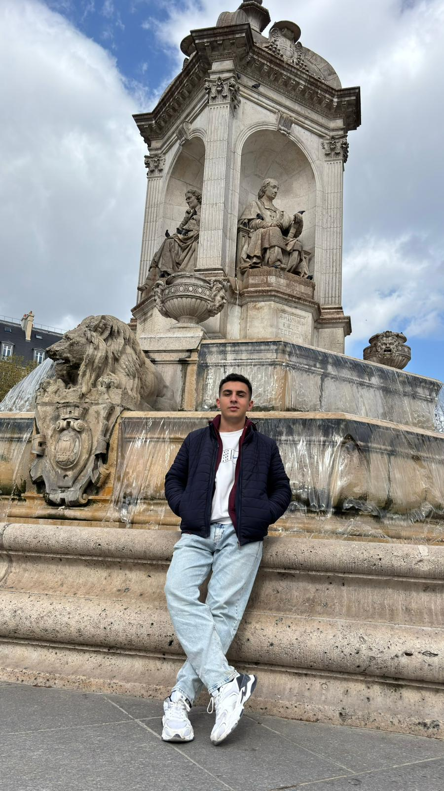
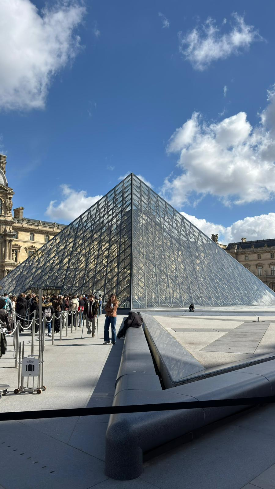
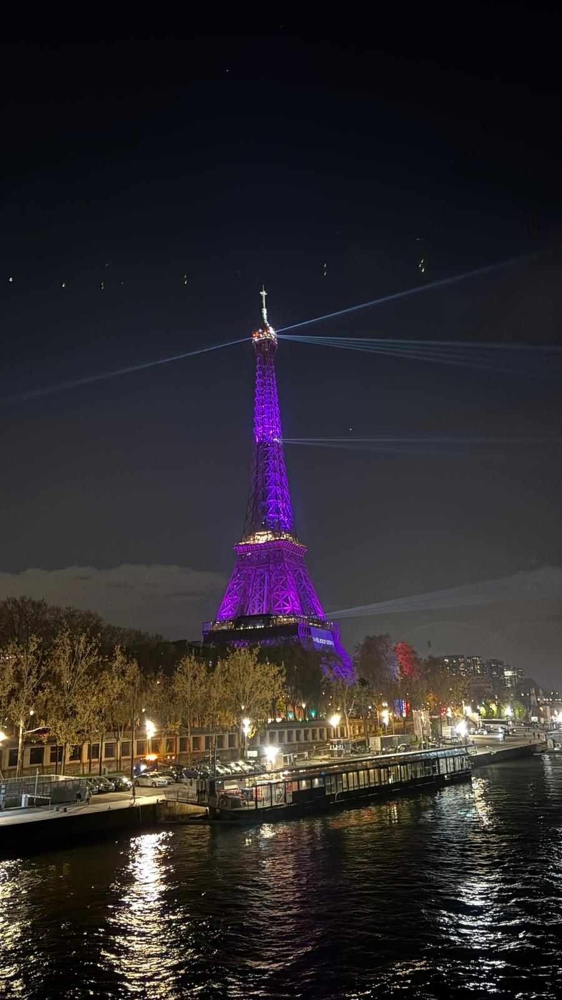
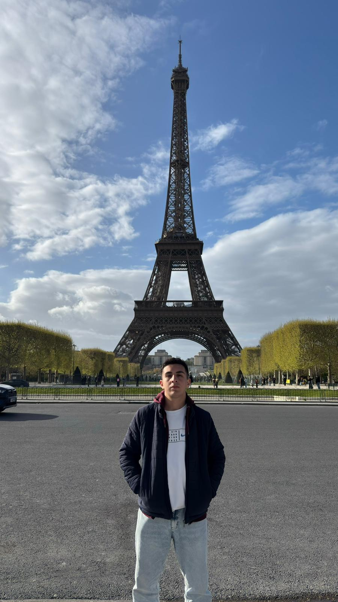

France
France was one of the highlights of my Erasmus journey. I visited Paris, and it quickly became one of my favorite cities. As someone who was born and raised in Istanbul, I enjoy large and lively cities, and Paris definitely gave me that feeling. What impressed me the most was how beautiful and consistent the city looked. In Istanbul, the tourist areas are amazing, but if you move away from the city center, you can often find older and less attractive buildings. Paris felt completely different. I spent three days there, walked through countless streets, and everywhere I went I saw elegant architecture and well-maintained buildings. I honestly cannot remember seeing anything that looked ugly or out of place. One of the most unforgettable moments of my trip was going up the Eiffel Tower. Standing at the top and looking out over the city gave me a feeling that is difficult to describe. It was unlike anything I had experienced before, and it remains one of the most special memories from my Erasmus journey.
Photo Gallery




Cities Visited
- Paris
Favorite Place
Eiffel Tower
My Rating
10/10 ⭐